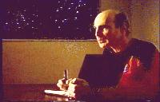
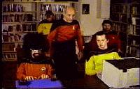
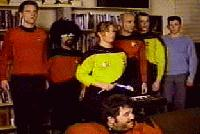

Escape From Seattle | Kill Roy | Doctor Who | Star Trek: The Pepsi Generation
What's Ryan Watching | The Wolfe Project | Mystery Science Theater 3000
Have I Got News For You | The 2001 Movies | Norwescon Movies | Meltdown
| "And the nominees for Best Soft
Drink Product Placement are... Star Trek: The Pepsi
Generation, They Call Me Mr. Pibb, and Snow White and the
Seven-Ups." -From Futurama, "That's Lobstertainment" (February 25, 2001) |
Star Trek: The Next Generation was launched on American television in September 1987. By November the parodying possibilities seemed endless. Attending Orycon that year in Portland, Oregon with Julia Mueller and Michael Delgado, we kept joking about Star Trek: The Next, Next Generation or something like that. One of us (I can't remember who) said, "What about Star Trek: The Pepsi Generation?" Inspiration had struck! Potential ideas wrote themselves, and by the time we drove back to Seattle at the end of the weekend we had a pretty good idea of what we wanted to have in the movie.
I decided to collaborate with Darrell Bratz, a friend of mine who had done a brilliant parody of Phil Donahue for our live stage show, A TARDIS Home Companion. I invited Darrell over for pizza one Sunday afternoon and together we pounded out a script. Later, Darrell confided to me as he drove home that day that he had no doubt this was the worst idea he had ever worked on and it would be a horrible disaster.
I also enlisted my former housemates Cyn Mason and Greg Cox to add jokes to the movie, which for reasons I can't remember was done at LeRoy Bervin's house in West Seattle (LeRoy contributed the "Doo-Dah" pun to the movie). Unlike Darrell, Cyn and Greg were quite enthusiastic.

Our one and only choice to play Picard was Michael Santo (left). Michael in fact hated The Next Generation and his continual irritation at being told he "looked like that guy on Star Trek" fueled his enthusiasm to parody the whole production. Michael in fact was being a very good sport. He was waiting patiently for T. Brian to come up with the next Doctor Who script that in theory we would be making later that year. (That script was not delivered until the summer of 1988, by which time the energy to pursue another Who had dissipated -- though Michael is still eager to do one.)With Broken Doors in post-production, The Pepsi Generation was filmed right after Rustycon in January 1988. Next Generation had only been on the air four months and Denise Crosby hadn't even been killed off the show yet (hence, her character's presence in the movie). Julia, as one of the originators of the movie, got to play Ya Har, but Michael Delgado was unavailable the weekend we were shooting, so Jeff Harris filled in to play Rigor. T. Brian Wagner refused to shave off his beard in order to play Doo-Dah, so the part went to Gary Watts. In fact, it was on the set of Pepsi that Gary started romancing the former Doris O'Connor. They were married in April 1989 and are still living in bliss in Carnation, Washington.
Filming was done in the apartment of Jeanine Grey and Chris Rimple, the only people I knew who lived in a windowless place. All the interior scenes were done on a Saturday, with all the exteriors shot the next day in Seattle's Discovery Park. Like most of the Doctor Who movies,

the ending of Pepsi needed tinkering. The movie originally ended with the Away Team beaming back up to the ship only to discover Rigor has turned the ship into a hippie-filled crash pad. Suddenly, Kirk, Spock, and McCoy show up where Bones declares the new show, "It's dead, Jim." Frequent actor Jim Dean played Kirk (making three separate movies in three different parts he appeared in for me). This scene was cut because I accidently erased the footage of them by mistake (whoops!), but in retrospect, the movie ends much funnier with Picard's line to Weasley about watching gladiator movies (shamelessly ripped-off from Airplane and contributed by Florida fan Scott Wilson.) The final shot of the ship falling off its string was an accidental blooper, with a post-dubbed line suggested by Keith Johnson. The cameo by the TARDIS was ad-libbed when model maker Gary Watts presented me with a tiny foam TARDIS and we decided to add it in the shot as a gag. In the original cut of the movie (notable for the numerous typos in the credits and lack of background stills during them), the TARDIS shot appeared during the movie, but the audience laughed too hard and missed the line Picard says about "Jumping down to the planet's surface."Cameraman Alan Halfhill fearlessly edited the movie in an all-night marathon session in order to premiere the movie at Norwescon 10, alongside Broken Doors, and won the Amateur Film Contest (beating out a 45-minute long

claymation parody of Star Trek: The Motion Picture). The reaction to Pepsi was immediate. People were clamoring for copies. Bootlegs (taped off the in-house video channel) turned up the very next day. It was a smash hit. All this for movie I spent two days and less than $200 on. Co-writer Darrell Bratz viewed the final project and admitted his initial misgivings were wrong and that he thought we had done a pretty good job.On August 26, 1996 BBC Television in England featured a clip from The Pepsi Generation on a documentary about Star Trek parodies. About a minute was used consisting of Michael Santo's "Space, the Final Frontier" speech at the movie's beginning. This was transmitted in the UK PAL television format converted from my 3/4" NTSC U-Matic master I provided them.
For the 10th anniversary in 1998, Alan Halfhill and I DIGITALLY REMASTERED Star Trek: The Pepsi Generation (just like the Star Wars movies!). New sound mix! Legible credits at last! Digital effect (we could only afford one!). Copies now available on VHS tape and DVD (home-made DVD-R format made on a Toshiba RD-XS52, may not be compatible on all players). Write me and please state which movie you want and what country you are in.
In 1989 I wrote a sequel to be part of an annual parody called Follies '89. In it, the crew of the Enterprise would meet a planet full guys named Steve, travel back in time, and rescue Pepsi from the diabolical clutches of Elvis-impersonating "Coca-Klingons." The reason production didn't go forward is Michael Santo left town to do Shakespeare. (I suppose I could be persuaded to post the script here if enough people were interested -- write me.) Meanwhile, I thought this would end my associate with Star Trek and parodies and that The Pepsi Generation would be my monument to Trek fandom. But a film was about to be released that would change all that...
Star Trek: The Pepsi Generation
16 minutes. 8mm videotape. Filmed January 1988, released March
1988. Digitially Remastered April 1998.
Cast. . . Michael Santo as Picard, Gary Watts as Doo-Dah,
Julia Mueller as Ya Har, Raven as Jordache, Conan MacLafferty as
Weasley, Jeff Harris as Rigor, Doris O'Connor as Toii; DJ
Driscoll, T. Brian Wagner and Ryan K. Johnson as writers; Tony
Case, Ian Smithers, Sharon Demuth, Joe Pincha, Mike Flynn and
Hadley Hull as the Ferrari.
Written by Ryan K. Johnson and Darrell Bratz, additional material
by Cyn Mason, Julia Mueller, Michael Delgado and Greg Cox.
Produced and Directed by Ryan K. Johnson
 Back to Ryan's
Homepage
Back to Ryan's
Homepage
Escape From Seattle | Kill Roy | Doctor
Who | Star Trek: The Pepsi Generation
What's Ryan Watching | The Wolfe Project | Mystery Science Theater 3000
Have I Got News For You | The 2001 Movies | Norwescon
Movies | Meltdown